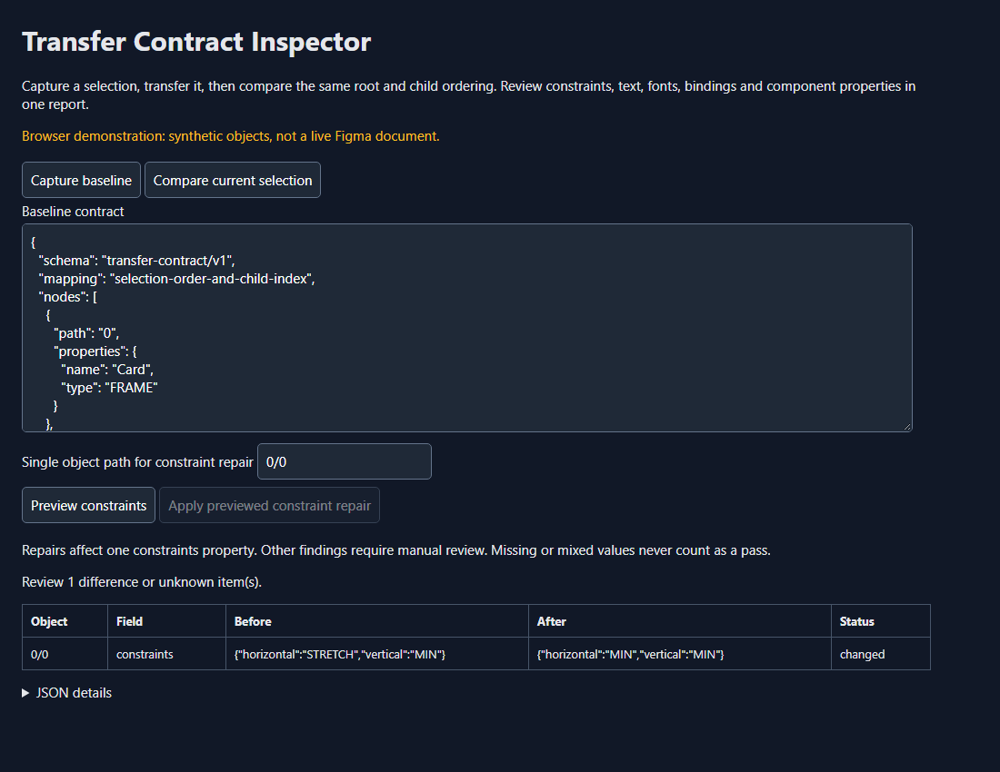

Transfer Contract Inspector for Figma · A Figma development plugin, with a separate browser demonstration
Two frames can look alike while behaving differently when resized. This plugin compares selected text, font settings and resizing rules before and after a transfer, bringing the checked differences into one report.
Experimental release · Plugin or extension for the original app
Imagine copying a title into another frame. At the current window size it looks right, but its resizing rule has changed: it is now pinned to the left rather than stretching with the frame. You may not notice until you try a different layout size.
A concrete example. The demonstration changes a title's horizontal resizing rule. Capture the original settings, compare the corresponding selection, and inspect that difference. The supported repair can restore one object's saved resizing rule after you preview it.
Select the objects you want to compare and capture a record of the supported settings.
Select the corresponding objects in the same order. Read which checked settings differ and which could not be assessed.
For the supported resizing-rule repair, preview the change and apply it to one object. Other differences need manual review.
What this page shows. The browser example uses invented design records. It lets you understand the comparison without opening Figma; the downloadable plugin is the part intended to run inside Figma.
Where it runs and what is still untested. This checks a limited set of properties, not a complete visual match or every component relationship. Object order matters. The browser example and tests using a simulated Figma interface passed; installation and undo in a real Figma session remain unverified.
Try the interactive synthetic comparison · Source and installation guide · Plugin download
Experimental0.1.0. Browser demo and API-double tests do not establish compatibility with a live Figma build.
Before: a transferred title looks right but has changed from stretch to left-pinned. After: capture the source selection contract, compare its transferred counterpart, inspect the specific constraint difference, and preview the supported repair.

Extract the release ZIP. Import its manifest as a development plugin in Figma desktop. Select non-overlapping roots in a stable order, capture the baseline JSON, perform the transfer, then compare the corresponding selection. Save the baseline JSON yourself. The plugin does not persist it automatically.
Object mapping uses root order and child indexes. Matching paths do not establish component or variable identity across files. Reordered children can produce misleading pairings and must be reviewed. Mixed properties remain unknowns; a passing report covers only the declared fields.
Enter the object's structural path, preview its original horizontal/vertical constraints, then apply. Changes in the selected state or target object invalidate the preview. One constraints property changes per action; no bulk repair or cross-document token remapping is attempted.
The public Plugin API supplies the mechanism used here. This release is original extension engineering, not recovered proprietary source. Earlier REA container inspection did not identify a transfer bug. Tests cover field loss, bounded input, mixed values and stale repair guards. Real-host installation and undo behavior remain unverified.
Official constraints API · Official instance API
node --test tests/contract.test.js node scripts/build.js
No runtime package dependencies. MIT-licensed original code; install Figma separately. This project is unaffiliated with Figma.